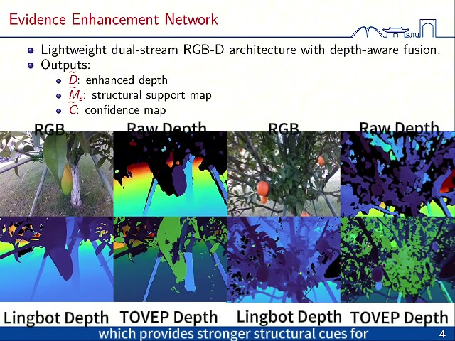

TOVEP: Visual-Geometric Evidence Enhancement for VLM-Guided Fruit Picking-Point Localization
TOVEP enhances RGB-D evidence for VLM-guided picking-point localization by producing an enhanced depth map, structural support map, and confidence map. A compact top-k structural reference module guides the VLM toward likely fruit-stem attachment regions and returns a structured picking record with point, approach orientation, confidence, and supporting evidence.
RGB-D evidence enhancement
Vision-language model
Picking-point localization